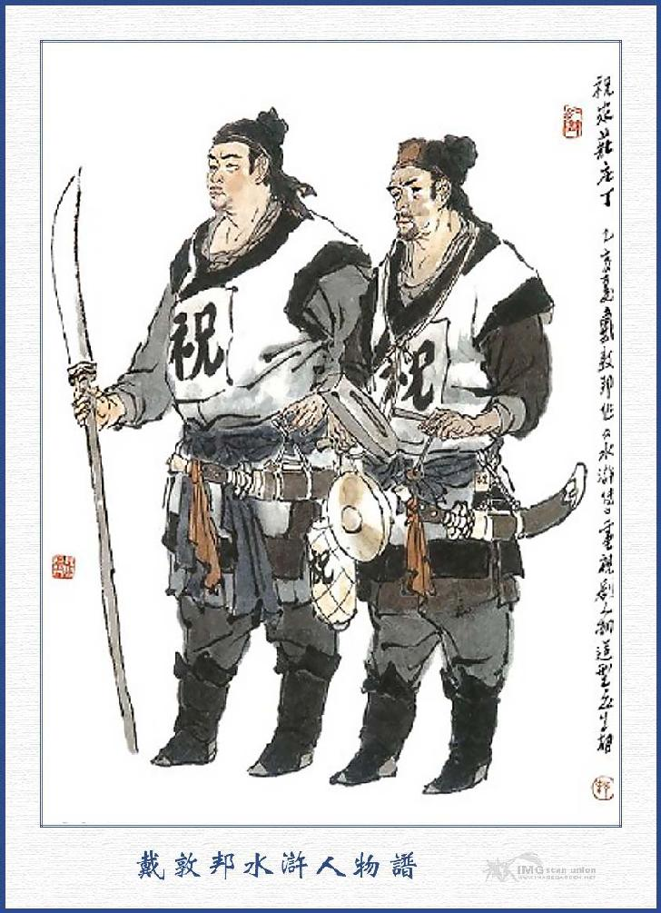
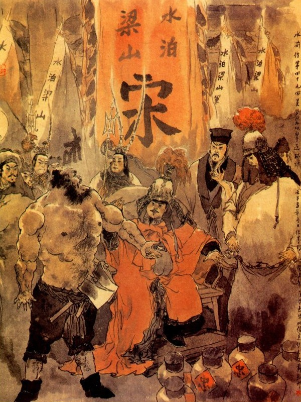
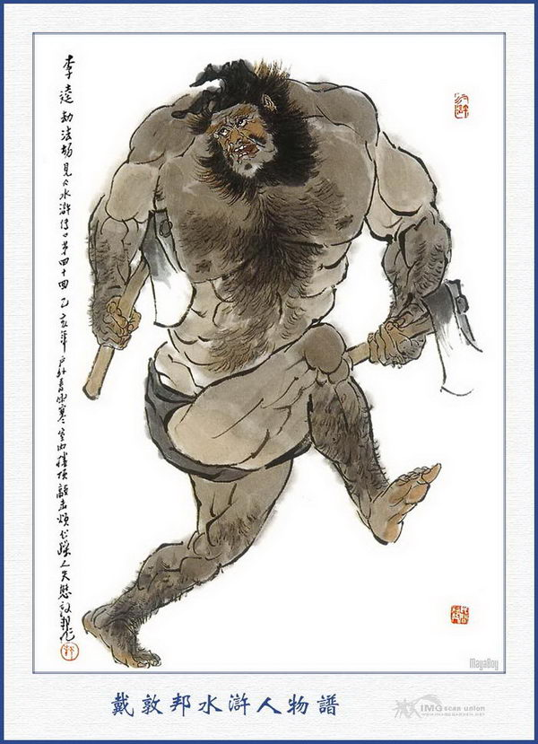
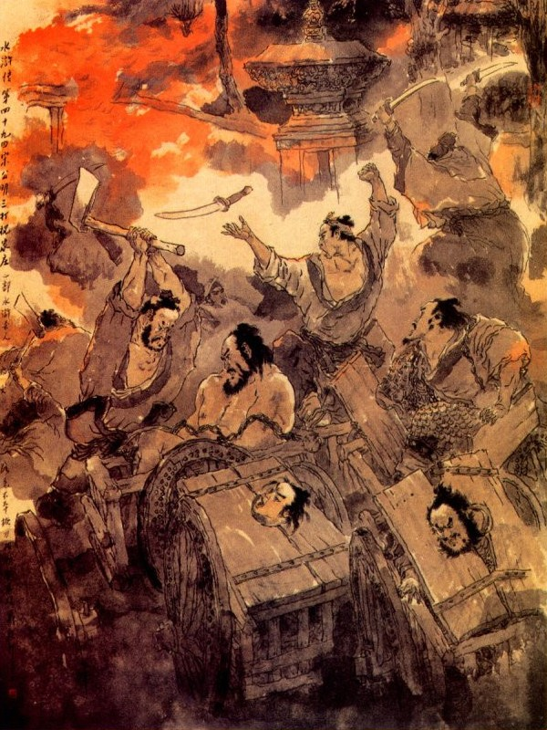

Khi đó Ngô Dụng bảo với Đới Tung rằng:
- Phiền hiền đệ trở về sơn trại gọi Thiết Diện Khổng Mục Bùi Tuyền, Thánh Thủ Thư Sinh Tiêu Nhưỡng, Thông Tý Viện Hầu Kiện, Ngọc Tý Viên Kim Đại Kiện, bốn người đem các thứ dùng theo sở trường của mình xuống đây, có việc cần kíp, phải mau cho kịp mới được.
Đới Tung vâng lệnh ra đi.
Chợt thấy quân sĩ vào báo, có con chủ nhân Hổ Gia Trang bên tây thôn là Hổ Thành, dắt trâu khiêng rượu đến xin vào bái kiến.
Tống Giang truyền lệnh cho mời vào.
Hổ Thành vào trước trướng, cúi lạy kêu rằng:
- Em gái chúng tôi còn tuổi trẻ lỗ mãng, không hiểu sự thế, trót lỡ mạo phạm tôn uy, vậy ngài bắt được, không dám hối hận điều chi. Song cái đó chỉ vì em tôi dạo trước trót đính hôn với Chúc Gia Trang, nên mới đường đột làm càn như vậy, dám xin Tướng Quân lấy lòng khoan thứ mà tha tội đi cho, ngài định lấy lễ vật thế nào, chúng tôi xin vâng lệnh.
Tống Giang nghe nói, truyền mời ngồi chơi mà nói rằng:
- Lũ Chúc Gia Trang ngông nghênh vô lễ, dám sỉ nhục bọn Lương Sơn, nên mới đem quân đánh giết. Lẽ ra đối với quý trang không có việc gì thì phải. Song vì lệnh muội bắt mất Vương Nụy Hổ của chúng tôi, nên chúng tôi phải trả lễ mà bắt lệnh muội cho phải phép đấy thôi. Nay nếu đem trả Vương Nụy Hổ đây thì chúng tôi sẽ xin trả lệnh muội lại.
Hổ Thành nói:
- Vị hảo hán ấy chúng tôi không được biết, bị bọn Chúc Gia Trang bắt về bên mất rồi.
Ngô Học Cứu hỏi:
- Vậy thì nay Vương Nụy Hổ ở đâu?
Hổ Thành nói:
- Hiện nay bị giữ ở bên Chúc Gia Trang, chúng tôi không thể nào sang lấy về được.
Tống Giang nói:
- Đã không lấy được Vương Nụy Hổ về trả lại chúng tôi thì chúng tôi trả lệnh muội về thế nào được?
Ngô Học Cứu nói:
- Huynh trưởng bất tất phải nói thế. Bây giờ cứ thế này mới được: Từ nay Chúc Gia Trang có việc gì thì Hổ Gia Trang không được cứu ứng, nếu Chúc Gia Trang có người chạy trốn sang tới đó thì phải bắt mà đem sang đây, bấy giờ tôi sẽ đưa trả lệnh muội về.
Vì lệnh muội hôm đó đã có người đưa lên núi, để Tống Thái Công săn sóc, hiện không có ở đây bây giờ, vậy xin cứ thế rồi sau này sẽ liệu.
Hổ Thành vâng lời mà rằng:
- Từ nay chúng tôi không dám cứu ứng nữa. Nếu họ có chạy sang thì chúng tôi bắt lấy, đem nộp sang ngay cho Tướng Quân.
Tống Giang nói:
- Nếu quả như thế, rất là hay lắm, không còn lễ vật nào hơn, nhưng cần phải đúng lời mới được.
Hổ Thành vâng lời bái tạ về.
Bấy giờ Tôn Lập sai lấy cờ hiệu, đổi làm quân mã của quan Đề Hạt ở phủ Đăng Châu rồi dẫn một hàng nhân mã đi thẳng đến Chúc Gia Trang, Trang khách ở trong tường, trông thấy cờ hiệu Đăng Châu, liền vào bảo cho trong trang biết.
Loan Đình Ngọc nghe báo có quân mã của Tôn Đề Hạt đến, bèn nói với ba con họ Chúc rằng:
- Tôn Đề Hạt với tôi là anh em học võ với nhau khi trước, nay không biết có việc chi mà đem nhân mã qua đây như vậy, ta thử ra đón vào hỏi chuyện xem sao?
Nói đoạn, sai mở cửa trang, bỏ đích kiều xuống rồi cùng ra đón tiếp. Bọn Tôn Lập thấy người ra tiếp, liền xuống ngựa chào nhau rồi Loan Đình Ngọc hỏi rằng:
- Lâu nay hiền đệ coi giữ Đăng Châu, sao nay lại đến đây, có việc gì đó thế?
Tôn Lập nói:
- Tôi vừa mới tiếp được văn thư của quan Tổng binh cắt sang coi giữ Vận Thành Châu, để phòng bị bọn Lương Sơn Bạc, tiện đường qua đây, nghe nói nhân huynh ở trong trang, nên muốn vào hỏi thăm một chút, lẽ ra đi lối cửa trước, nhưng thấy ngoài phía đằng ấy toàn thị quân mã đóng đông, nên không dám xung đột, phải tìm đường lối tắt trong thôn, đi lối cửa sau mà vào thăm nhân huynh đây.
Loan Đình Ngọc nói:
- Đã mấy hôm nay đánh nhau với bọn giặc Lương Sơn mới bắt được mấy tên Đầu Lĩnh ở trong trang kia, chỉ đợi bắt tên chúa chỏm là Tống Giang rồi đem giải quan một thể. Nay ta được hiền đệ đến đây thì thực là trên gấm thêm hoa còn gì hơn nữa?
Tôn Lập cười rằng:
- Nếu vậy tiểu đệ tuy kém cũng xin giúp nhân huynh bắt nốt tụi ấy, cho trọn việc của nhân huynh chẳng hay có được hay không?
Loan Đình Ngọc nghe nói cả mừng, liền mời cả vào trong trang rồi cất cầu lên mà đóng cổng trang lại. Tôn Lập dẫn nhân mã vào xếp đặt một nơi, thay đổi áo xiêm rồi lên trên sảnh chào Triều Phụng và ba anh em Chúc Long.
Khi chào hỏi xong, Loan Đình Ngọc nói với Chúc Triều Phụng rằng:
- Hiền đề Tôn Lập tôi đây, biệt hiệu là Bệnh Uất Trì, đương là Đề Hạt ở phủ Đăng Châu, nay vâng mệnh Tổng binh sai đóng ở Vận Châu đó.
Chúc Triều Phụng nói:
- Nếu vậy chúng tôi cũng thuộc dưới quyền ngài đây rồi.
Tôn Lập khiêm tốn mà rằng:
- Có đâu dám thế? Chúng tôi đến đây cũng mong có điều gì ngài sẽ chỉ giáo cho.
Ba con họ chúc mời mọi người cùng ngồi rồi Tôn Lập hỏi đến sự tình đánh nhau ra sao?
Chúc Long đáp rằng:
- Hiện đánh mấy hôm nay chưa phân thắng phụ ra sao cả.
Đoạn rồi Tôn Lập gọi Cố Đại Tẩu, dẫn Nhạc Đại Nương vào trong nhà, để chào hỏi vợ con Chúc Triều Phụng và gọi Tôn Tân, Giải Trân, Giải Bảo lên chào mọi người mà nói rằng:
- Ba người này là anh em tôi cả.
Lại trỏ Trâu Uyên, Trâu Nhuận mà nói rằng:
- Hai vị quan nhân ở Đăng Châu đi tiễn tới đây.
Chúc Triều Phụng và ba con dẫu có khôn ngoan sắc sảo, song thấy Tôn Lập đi đó có vợ con anh em, kẻ đưa người đón, còn là đồ đạc xe pháo cẩn thận, lại là anh em bạn học với giáo sư Loan Đình Ngọc thì trong lòng không còn chút gì nghi ngờ, liền sai thiết cơm rượu để làm tiệc khoản đãi mà lưu ở đó mấy hôm.
Đêm hôm thứ ba chợt thấy trang binh vào báo:
- Tống Giang lại kéo quân mã sang đánh trang.
Chúc Bưu nghe báo nói lên rằng:
- Để ta ra trận bắt thằng giặc này mới được.
Nói đoạn mở cửa trang, bỏ cầu xuống, dẫn hơn một trăm quân kỵ xông ra. Ngoài kia có một toán quân mã ước chừng năm trăm người, một viên tướng là Tiểu Lý Quảng Hoa Vinh, đeo cung dắt tên, vỗ ngựa múa gươm đến đánh, Chúc Bưu múa gươm vỗ ngựa xông ra đấu nhau trước núi Độc Long tới mấy mươi hiệp, bất phân thắng phụ.
Hoa Vinh lừa miếng phá đĩnh quay ngựa ù té chạy, Chúc Bưu liền toan phóng ngựa đuổi theo. Chợt có người đứng đằng sau nói lên rằng:
- Tướng Quân chó nên đuổi, người ấy bắn tên giỏi lắm, lỡ ra mắc tên ngầm thì khốn.
Chúc Bưu nghe nói, bên quay ngựa trở lại, dẫn quân mã đi rồi. Chúc Bưu liền xuống ngựa, lại vào nhà trong uống rượu.
Tôn Lập hỏi:
- Tiểu Tướng Quân bắt được tên giặc nào đó?
Chúc Bưu nói:
- Trong bọn đó có anh Tiểu Hoa Vinh nào đánh gươm cũng khá, đấu nhau đến năm mươi hiệp rồi hắn kéo chạy, tôi đã toan đuổi theo, sau thấy bọn quân nhân nói là anh ta bắn tên rất giỏi, phòng khi hắn bắn tên ngầm, nên phải kéo quân về mà không đuổi nữa.
Tôn Lập nói:
- Tôi dẫu bất tài nhưng ngày mai xin bắt mấy đứa cho ngài coi.
Nói đoạn lại cùng nhau uống rượu đến tối mới tan.
Vào khoảng giờ ngọ ngày hôm sau, trang binh lại vào báo:
- Quân mã Tống Giang lại kéo đến trước trang.
Chúc Long, Chúc Hổ, Chúc Bưu nghe báo đều đóng đai nịt lên ngựa, mở cửa trang để đón đánh. Bấy giờ xa nghe tiếng trống la khua, cờ bay phất phới, quân mã Tống Giang, đã bầy thành trận thế, tề chỉnh ở đó.
Chợt thấy bên trận Tống Giang có Báo Tử Đầu Lâm Xung quát mắng ầm ĩ cả lên. Chúc Long nghe vậy cả giận liền bỏ đích kiều xuống, cầm thương lên ngựa, dẫn hai trăm nhân mã reo hò bước ra, phá trận của Lâm Xung, trong trang khua trống vang lừng rồi hai bên cùng giương cung bắn tên để canh giữ ven trận. Lâm Xung múa bát sà mâu đánh nhau với Chúc Long hơn ba mươi hiệp bất phân thắng phụ, đôi bên lại khua la đều thu quân lại. Chúc Hổ nóng tiết vác đao lên ngựa xông ra trước trận, quát lên rằng:
- Tống Giang ra đây, quyết chiến một trận xem sao?
Bên kia Mộc Già Lan Mục Hoằng liền vỗ ngựa ra đánh Chúc Hổ. Đôi bên đánh nhau hơn ba mươi hợp cũng không phân thua, Chúc Bưu thấy vậy không sao im được liền cầm thương lên ngựa, dẫn hai trăm quân kỵ, thẳng xông đến trận Tống Giang, bên kia Bệnh Quan Sách Dương Hùng thấy hai bên đánh nhau hăng hái, trong bụng mũ giáp đai bào và dắt ngựa ô truy của mình ra rồi ăn mặc chỉnh tề mà nhảy lên mình ngựa. Trên trang nổi một hồi thanh la, Tôn Lập liền phóng ngựa ra trận, bên kia Lâm Xung, Mục Hoằng, Dương Hùng đều kìm ngựa đứng ở trước trận Tống Giang.
Tôn Lập phóng ngựa ra mà nói:
- Tôi xin bắt mấy thằng này cho các ngài xem.
Khi đến trước mặt trận, Tôn Lập quát lên rằng:
- Trong trận giặc có tay nào đánh giỏi, ra đây quyết chiến với ta?
Nói đoạn thấy bên kia nhạc ngựa loảng soảng, có một viên tướng là Thạch Tú cưỡi ngựa xông ra đánh.
Đôi bên người ngựa giao nhau, mũi thương lên xuống đánh nhau tới năm mươi hợp. Tôn Lập lừa miếng phá đĩnh nhường cho Thạch Tú đánh sấn vào rồi né mình vờ tránh mà bắt sống Thạch Tú cắp tót về trước trang bảo quân sĩ trói lại.
Ba người họ Chúc thấy vậy liền thừa thế mà đánh ra, quân mã Tống Giang đều chạy tán loạn hết. Đoạn rồi thu quân trở về trong trang, cùng đến chúc mừng Tôn Lập.

GIA ĐINH CHÚC GIA TRANG
Tôn Lập liền hỏi:
- Hôm nay nữa là bắt được mấy tên giặc tất cả?
Chúc Triều Phụng nói:
- Thoạt tiên bắt được Thời Thiên, thứ nhì bắt được tên Dương Lâm đương đi do thám, thứ ba bắt được Hoàng Tín rồi Nhất Trượng Thanh bên Hổ Gia Trang bắt được tên Vương Nụy Hổ, sau đối trận bắt được tên Tần Minh, Đặng Phi, hôm nay lại bắt được Thạch Tú chính là tên đốt điếm của tôi hôm nọ đấy. Thế là cộng tất cả được bảy tên rồi.
Tôn Lập nói:
- Được, không nên giết một thằng nào cả, cứ để bảy xe tù nhốt nó đấy, cho ăn uống tử tế, đừng để cho nó gầy còm, chờ bao giờ bắt được Tống Giang sẽ giải lên Đông Kinh, cho thiên hạ biết tiếng Tam Kiệt ở Chúc Gia Trang.
Chúc Triều Phụng tạ ơn mà rằng:
- Đa tạ Đề Hạt có lòng giúp đỡ, chắc là bọn Lương Sơn phải dứt ngay.
Nói xong đón Tôn Lập vào trong nhà dự tiệc, còn Thạch Tú thì cho giam xuống xe tù. Bấy giờ Tôn Lập ngầm sai Trâu Uyên, Trâu Nhuận cùng Nhạc Hòa, đi dò xét các nơi phòng ốc cùng các cửa ngõ ra vào cho tinh thuộc tất cả, để đợi cho đến lúc hành sự. Dương Lâm, Đặng Phi thấy hai người ở đó thì trong bụng lấy làm vui mừng vững ý. Nhạc Hòa liền thừa cơ lúc vắng, báo tin tức cho mọi người cùng biết, còn Cô Đại Tẩu, cùng Nhạc Đại Nương thì chuyên về một việc các lối ra vào trong phòng ốc cho thông. Ngày hôm thứ năm, nhằm khoảng giờ thìn, cơm nước mới xong bỗng thấy người nào báo Tống Giang chia binh làm bốn mặt ập vào đánh Chúc Gia Trang.
Tôn Lập nói:
- Nó chia đến mười mặt cũng mặc, các anh không sợ, cứ phòng bị cho cẩn thận, sắp sửa gậy móc tử tế, để ta bắt cả cho mà xem. Chết một thằng nào cũng không phải là giỏi.
Người trong trang đều nai nịt tử tế rồi Chúc Triều Phụng dẫn mấy người lên cổng gác để nom, khi đó thấy phía đông có một đội năm trăm quân mã, một tướng đứng đầu là Báo Tử Đầu Lâm Xung và Lý Tuấn, Nguyễn Tiểu Nhị đứng sau. Phía bên tây một toán nhân mã ước tới năm trăm, có Tiểu Lý Quảng Hoa Vinh đứng trước, có Trương Hoành, Trương Thuận, theo sau; Bên Nam một bọn năm trăm nhân mã có ba vị Đầu Lĩnh đứng đầu là Mục Hoằng, Dương Hùng và Lý Quỳ, mấy mặt nhân mã đều động trống khua chiêng, uy thế ầm ầm không khác gì vỡ trời long đất vậy.

Loan Đình Ngọc bảo với mọi người rằng:
- Hôm nay tất phải cẩn thận mới được, để tôi xin dẫn một đội nhân mã ra cửa sau, đánh về mạn Tây Bắc.
Chúc Long nói:
- Tôi xin dẫn quân mã ra lối cửa trước, đánh mặt chính Đông.
Chúc Hổ nói:
- Tôi xin ra cửa sau đánh mạn Tây Nam.
Chúc Bưu nói:
- Còn tôi xin ra cửa trước đánh bắt Tống Giang thằng giặc ấy mới quan hệ lắm.
Chúc Triều Phụng cả mừng, đưa rượu thưởng cho mọi người. Rồi ai nấy đều lên ngựa, dẫn ba trăm quân kỵ mã, mở cửa trang đi ra. Còn các người canh giữ trong trang đều khua trống reo hò để giúp thêm oai thế.
Khi đó Trâu Uyên, Trâu Nhuận đã giấu sẵn đại phủ trong mình, đứng chực ở bên cửa sảnh, Giải Trân, Giải Bảo dắt dao đứng ở cửa sau, Tôn Tân, Nhạc Hòa đứng ở cửa trước, còn Cố Đại Tẩu thì sai người nhà giữ lấy Nhạc Đại Nương rồi cầm song đao nấp ở trong nhà, để cùng đợi nhau hạ thủ. Bên này bọn Chúc Gia Trang đánh ba hồi trống, nổi tiếng súng hiệu, mở cửa trước cửa sau, hạ đích kiều xuống rồi mấy toán quân đều xông ra chia đường đón đánh. Tôn Lập vừa mới dẫn vài mươi tên quân ra, đứng ở đích kiều thì Tôn Tân đã đem cờ hiệu của Tôn Lập cắm ngay ở trên gác cổng. Đoạn rồi Nhạc Hòa cầm sang hát lên mấy tiếng.
Trâu Uyên, Trâu Nhuận nghe tiếng hát, liền thổi còi hiệu rồi múa đại phủ chém luôn mấy tên trang khách canh cổng và mở xe tù thả bảy ông kễnh ở trong đó ra. Bảy anh ra khỏi xe ù, bèn đến giá gươm mỗi anh vớ lấy một cây rồi reo hò ầm ầm cả lên.
Cố Đại Tẩu múa song đao xông vào trong phòng, tìm bao nhiêu đàn bà trẻ con, tặng cho mỗi người một dao, không còn mống nào sót lại.
Chúc Triều Phụng thấy sự thế nguy biến, liền đâm đầu xuống giếng, bị Thạch Tú nhanh tay chém cho một dao rồi cắt lấy thủ cấp. Đoạn rồi mười mấy vị chia tay nhau mà đuổi giết trang binh.
Giải Trân, Giải Bảo ở cửa sau, liền châm lửa đốt đống cỏ ngựa làm cho khói lửa bốc lên mù mịt cả trời.
Bốn mặt nhân mã thấy trong trang phát hoả, liền hết sức cướp đường về cứu, Chúc Hổ chạy về đến đích kiều, gặp Tôn Lập ngăn đường mà quát hỏi rằng:
- Thằng giặc này chạy đi đâu thế?
Chúc Hổ biết là mắc kế, bèn quay ngựa chạy lại trận Tống Giang, luống cuống bị Lã Phương, Quách Thịnh đâm chết cả người lẫn ngựa. Toán tiểu đội Chúc Gia thấy vậy, đều tán loạn chạy đi cho thoát mạng rồi Tôn Tân đón Tống Giang vào trang.
Mặt bên Đông, Chúc Long đấu với Lâm Xung không nổi, quay ngựa chạy về lối cổng sau. Khi vào tới đích kiều thấy Giải Trân, Giải Bảo, đương ném xác trang khách vào đống lửa. Chúc Long bèn quay ngựa trở lại mà chạy về mạn bắc, bỗng đâu gặp Lý Quỳ cầm song phủ chém con ngựa ngã lăn ra rồi sấn vào chém đứt Chúc Long làm hai đoạn.
Chúc Bưu thấy trang khách đến báo, biết không trở về được, liền vỗ ngựa chạy thẳng đến Hổ Gia, bị Hổ Thành sai trang khách trói lại rồi đem giải đến Tống Giang. Vừa giải đến giữa chừng gặp Lý Quỳ giơ song phủ chém luôn một nhát rồi trang khách chạy tan đi hết.
Lý Quỳ lại vác phủ xông đánh Hổ Thành, Hổ Thành thấy thế lực hùng dũng không sao đánh nổi, liền phóng ngựa bỏ cửa bỏ nhà mà chạy sang phủ Diên An, về sau mới phát phúc làm nên một võ tướng ở đó.
Bấy giờ Lý Quỳ đang thuận tay thích chém, thẳng đến Hổ Gia Trang, đem toàn gia họ Hổ bất cứ trẻ già đều chém chết hết cả rồi gọi tiểu lâu la dắt lấy cả ngựa, thu lấy của cải rồi cho một mồi lửa đốt cháy trang viện, khi trở về dâng nộp Tống Giang.

LÝ QUỲ
Khi đó Tống Giang ngồi trong Chúc Gia Trang, các Đầu Lĩnh đến dâng công, bắt sống được bốn năm trăm người, cướp được năm sáu trăm ngựa, còn trâu dê băt sống không biết bao nhiêu mà kể.
Tống Giang thấy vậy cả mừng mà nói rằng:
- Chỉ thương hại cho Loan Đình Ngọc là một tay hảo hán anh hùng mà cũng bị chết oan vào đó, thực là đáng tiếc!
Đương khi than thở chợt thấy người báo, Hắc Toàn Phong đốt Hổ Hoàng Tín chém đầu người đem đến nộp.
Tống Giang nghe báo liền nói:
- Hổ Thành bữa trước đã đến xin hàng, ai bảo nó đến chém giết người ta và đốt cả nhà người ta như thế?
Vừa nói dứt lời thì thấy Lý Quỳ mình đã máu me, lưng dắt song phủ thẳng đến trước mặt Tống Giang, dạ mà nói rằng:
- Chúc Long chúng tôi giết rồi, Chúc Bưu cũng bị tôi giết nốt, Hổ Thành thì chạy mất, còn cả nhà Hổ Thái Công đều bị giết sạch cả, xin đến để dâng công.
Tống Giang quát lên rằng:
- Chúc Long thì có người trông thấy ngươi giết, còn những người khác thì ngươi giết ở đâu?
Lý Quỳ nói:
- Tôi chém đương sướng tay, toan chạy vào Hổ Gia Trang, gặp ngay người anh nàng Nhất Trượng Thanh giải Chúc Bưu ra, bèn chém cho một nhát bửa sọ làm đôi, chỉ còn tiếc Hổ Thành chạy mất, không làm sao đuổi được. Nhà hắn thì tôi cũng giết cả rồi, không còn sót một người nào cả.
Tống Giang lại quát lên rằng:
- Ai bảo nhà ngươi đến đấy? Ngươi phải biết, bữa trước Hồ Thành đã dắt dê khiêng rượu đến xin hàng mà sao không nghe lệnh ta, dám thiện tiện đến đó giết cả nhà người ta, cố ý làm trái tướng lệnh của ta như thế?
Lý Quỳ nói:
- Ca Ca quên chứ tôi đây không quên đâu. Bữa trước tôi còn nhớ con ranh con nó đuổi đánh định giết Ca Ca, thế mà nay còn bênh nó. Ca Ca định kết hôn với nó hả mà thương tiệc bố vợ?
Tống Giang liền thét lên rằng:
- Đừng thoăng thoắng nói xấc ở đây. Bắt sống được mấy người tất cả?
Lý Quỳ nói:
- Ối chào! Ai phiền phức thế, nó có sống nữa cũng chém chết cho xong.
Tống Giang nói:
- Ngươi trái quân lệnh của ta lẽ phải chém, nhưng nghĩ công ngươi bắt được Chúc Long, Chúc Bưu thì hãy xóa đi cho, lần sau nếu trái lệnh, tất là không tha nữa.
Lý Quỳ nói:
- Thôi, dẫu không có công lao gì, nhưng chém cũng sướng tay đã.
Khi đó chợt thấy quân sư Ngô Học Cứu dẫn nhân mã đến trang để nâng chén mừng Tống Giang. Tống Giang bàn với Ngô Học Cứu định trừ hết cả thôn Chúc Gia thì mới hả lòng.
Thạch Tú bẩm với Tống Giang rằng:
- Ở thôn đây có lão Chung Ly vốn là kẻ lương dân tử tế, nếu hôm đó lão không chỉ đường bảo tôi thì tất còn nguy nữa, vậy chúng ta không nên bỏ hoại người tốt mới được.
Tống Giang bèn cho Thạch Tú đi tìm người ấy đến.
Thạch Tú vâng lời đi một lúc tìm được lão Chung Ly, dẫn đến lạy chào Tống Giang cùng Ngô Học Cứu.
Tống Giang sai lấy một bao kim bạch, thưởng cho lão già mà nói rằng:
- Lẽ ra ta định làm cỏ hết cả thôn này, song nghĩ lão già có ơn khi trước mà tha cả cho dân, từ nay phải yên nghiệp làm ăn mới được.
Chung Ly vâng lạy tạ ơn, Tống Giang lại nói:
- Mấy hôm nay ta đến ở đây, không khỏi có điều rối loạn đến dân sự. Vậy nay đã đánh xong Chúc Gia Trang, vì dân trừ được hại to, trong dân có bao nhiêu nhà, đều thưởng cho một hộc gạo, gọi là thụ lộc làm vui, phiền lão phân phát giúp cho.
Đoạn rồi nhất diện sai đem thóc gạo của Chúc Gia Trang xếp để lên xe, kim ngân tài bạch chia thưởng cho ba quân và các thứ trâu bò, dè ngựa, đều tải về sơn trại để mà chi dụng. Khi đó tính ra được năm mươi vạn hộc lương đem về Sơn Bạc. Tống Giang thấy vậy lấy làm vui mừng liền cùng các vị Đầu Lĩnh cũ và mới là bọn Tôn Lập đem vả xe trượng vợ con, chia làm ba đội lập tức kéo về sơn trại.
Khi đi qua đường các dân sự trong thôn, đều cõng trẻ dắt già đem hương hoa ra đường đón để mừng lạy tạ, chẳng khác chi quân vương giả đi qua, không ai là không kính phục.
Ba quân thẳng ngọn cờ đào,
Oai hầm dậy đất, tiếng hào xông mây.
Cõi trời riêng chiếm từ đây,
Những loài nô lệ xưa nay sá gì?
Nói về Phác Thiên Bằng Lý Ứng từ khi chữa khỏi vết thương, trong mình đã hơi khỏe mạnh, liền đóng kín cửa trang không ra đến ngoài mà ngày ngày cho người ra thăm tin tức Chúc Gia. Sau khi biết Chúc Gia đã bị Tống Giang đánh phá tan tành thì trong bụng nghĩ thầm nửa mừng mà thêm nửa sợ. Chợt một hôm thấy trang khách đến báo:
- Có Quan Phủ bản châu dẫn bốn năm mươi tên kiệu quân đến, muốn hỏi sự tình Chúc Gia Trang.
Lý Ứng nghe nói, liền bảo Đỗ Hưng mở cửa trang, bỏ đích kiều rồi lấy lụa quấn tay ra đón Quan Phủ mời vào trong sảnh.
Khi tới nơi Quan Phủ xuống ngưak vào sảnh ngồi giữa, viên Khổng Mục ngồ một bên, phía dưới có mấy người Áp Phiên, mấy người Ngu Hầu, dưới nữa thêm có mấy người Tiết Cấp cùng lính ngục đứng hầu.
Lý Ứng lạy chào, đứng ở trước sảnh rồi Tri Phủ hỏi:
- Việc Chúc Gia Trang bị đánh phá như thế nào?
Lý Ứng bẩm rằng:
- Chúng tôi bị Chúc Bưu bắn một mũi tên, vẫn còn đau ở cánh tay, phải đóng cửa ở trong nhà không hiểu sự thể ra sao?
Tri Phủ nói:
- Chúc Gia Trang hiện có đơn đem trình, nói rằng ngươi kết liền với bọn Lương Sơn, dẫn quân đi đánh Chúc Gia Trang và nhận các đồ chè rượu trâu dê của giặc, còn chối làm sao.
Lý Ứng nói:
- Chúng tôi là một người biết phép luật xưa nay, có khi nào lại dám làm càn như thế được.
Tri Phủ nghiêm sắc mặt nói rằng:
- Ngươi nói khó tin lắm, hãy đem về Phủ rồi sẽ đối chứng xem sao?
Nói đoạn, liền quát trói Lý Ứng đem về Phủ để đối chứng với bọn Chúc Gia Trang. Hai viên Ngu Hầu cùng bọn Tiết Cấp túm vào trói Lý Ứng lại rồi Quan Phủ lên ngựa dẫn mọi người dong Lý Ứng đi.
Quan Phủ lại hỏi:
- Tên nào là Đỗ Chủ Quản đây?
Đỗ Hưng nói:
- Bẩm chúng con là Đỗ Hưng.
Tri Phủ nói:
- Trong giấy thưa có cả tên ngươi, ta phải bắt về một thể, chúng đâu trói lại.
Chúng vâng lời, khóa tay Đỗ Hưng vào, cùng dong theo Quan Phủ ra khỏi cổng trang rồi vội vội vàng vàng kéo đi rất nhanh.
Đi được ba mươi dặm đến một khu rừng kia, chợt thấy Tống Giang, Hoa Vinh, Lâm Xung Dương Hùng, Thạch Tú, dẫn một toán nhân mã đón chặn đường đi rồi Lâm Xung quát lên rằng:
- Bọn hảo hán Lương Sơn Bạc ở đây.
Bọn Tri Phủ thấy vậy kinh hoàng luống cuống, không dám chống cự, liền bỏ cả Lý Ứng, Đỗ Hưng mà chạy trốn thẳng.
Tống Giang quát lên rằng:
- Chúng đâu đuổi bắt lấy bọn kia.
Chúng vâng lệnh quay ra đuổi một quãng rồi chạy về bẩm rằng:
- Nếu chúng tôi đuổi kịp thì chém đầu Tri Phủ mang về, nhưng không biết họ đã chạy trốn đâu hết cả rồi.

Tống Giang liền sai cởi trói Lý Ứng, Đỗ Hưng tháo cả khóa ra rồi sai dắt hai con ngựa cho hai người cưỡi mà hỏi rằng:
- Chúng tôi muốn mời ngài lên Sơn Bạc ít bữa, có được chăng?
Lý Ứng nói:
- Tôi không thể đi được. Tri Phủ là các ông giết, không việc gì đến tôi.
Tống Giang cười rằng:
- Trước mặt Quan Tư ai hiểu cho lẽ đó? Chúng tôi đi rồi, chỉ e lại lụy cho các ngài thôi. Đã hay là ngài chả chịu làm nghề lạc thảo nhưng hãy lên ở tạm sơn trại ít bữa, để nghe xem sự thể làm sao rồi lại trở về cũng được.
Nói đoạn đốc thúc quân mã dắt ngựa bắt hai người cùng đi, không thể nào từ chối được. Khi về tới Lương Sơn Bạc, Tiều Cái dẫn các hàng Đầu Lĩnh đón tiếp, dâng rượu tiếp phong rồi mời cả lên Tụ Nghĩa Sảnh. Bấy giờ mời Lý Ứng lên, cùng các Đầu Lĩnh chào hỏi, xong rồi cùng khiêm nhượng mà chia ra ngồi làm hai dãy.
Lý Ứng nói với Tống Giang rằng:
- Hai người chúng tôi tới đây, được cùng các vị Đầu Lĩnh tiếp kiến, dẫu ở đây theo với các ngài cũng không lấy gì làm ngại. Song còn vợ con ở nhà, không biết ra sao? Xin các ngài rộng ơn cho chúng tôi trở về thì hay lắm.
Ngô Dụng cười mà đáp rằng:
- Chết nỗi! Đại Quan Nhân lầm rồi, quý quyến hiện đã đến sơn trại kia chứ đâu? Quý trang bây giờ đã đốt cháy cả rồi, Quan Nhân còn định về đâu được nữa.
Lý Ứng nghe nói bụng hồ đồ không tin, chợt thấy một toán nhân mã dẫn các xe trượng kéo lũ lượt ra sơn trại. Lý Ứng nom ra, quả nhiên toàn là những người trong trang trại mình cả, bèn vội vàng chạy ra hỏi thăm tin tức. Sau thấy vợ con nói rằng:
- Khi Quan Phủ bắt dong Quan Nhân đi rồi. Lại có hai người Tuần Kiểm dẫn bốn người Đô Đầu đem ba trăm thổ binh đến, thu lấy hết cả tài sản, bắt hết chúng tôi cho lên xe, bao nhiêu hòm xiểng trâu dê lừa ngựa, đều bắt lấy cả, nói là dọn chạy loạn đi rồi phóng hoả đốt cả trang viện mà kéo lên đây.
Lý Ứng nghe nói ngây hẳn người ra kêu khổ!
Tiều Cái, Tống Giang liền xuống sảnh cúi lạy tạ tội mà rằng:
- Anh em chúng tôi nghe nói Đại Quan Nhân là người tốt, mới lập ra mưu để đón ngài lên đây, dám xin ngài thứ tội cho.
Lý Ứng thấy sự thế đến nơi và được lòng tử tế như vậy, đành phải vâng theo mà không biết nói làm sao được nữa.
Tống Giang liền sai đem quyến thuộc Lý Ứng cho vào ở một bên phòng hậu sảnh. Lý Ứng thấy các Đầu Lĩnh cũng nhiều người vợ con cũng phải vâng lời mà lưu ở trong sơn trại cho xong.
Đoạn rồi cùng vào trong sảnh trò chuyện với nhau. Các Đầu Lĩnh đều tỏ ý vui mừng vô hạn.
Tống Giang cười bảo Lý Ứng rằng:
- Ngài thử xem để tôi gọi bọn Quan Phủ với bọn Tuần Kiểm của chúng tôi ra chào ngài.
Nói đoạn gọi từng người ra trỏ cho Lý Ứng xem:
- Tiên Nhượng làm quan Phủ, Đới Tung, Dương Lâm làm Tuần Kiểm, Bùi Tuyên làm Khổng Mục Kiêm Đại Kiện, Hầu Kiện làm Ngu Hầu và Lý Tuấn, Mã Lân, Trương Thuận, Bạch Thắng làm Tiết Cấp.
Lý Ứng nom thấy vậy lắc đầu lè lưỡi không nói được câu gì nữa. Tống Giang lại sai giết trâu mổ ngựa làm tiệc thiết đãi Lý Ứng và khao mừng mười hai vị Đầu Lĩnh mới lên sơn trại là: Tôn Lập, Tôn Tân, Giải Trân, Giải Bảo, Trâu Uyên, Trâu Nhuận, Đỗ Hưng, Nhạc Hòa, Thời Thiên, Cố Đại Tẩu, Hổ Tam Nương và Nhạc Đại Nương, còn gia quyến Lý Ứng thì làm việc thiết đãi ở trong nhà trong, các quân chúng lớn nhỏ đều có khao thưởng hết cả. Hôm đó trên đại sảnh mở cờ dóng trống, đàn nhạc vang lừng, các Đầu Lĩnh cùng nhau chè chén đến tối mới tan. Đoạn rồi sai xếp đặt phòng riêng cho các vị Đầu Lĩnh mới đến ở yên nghỉ.
Ngày hôm sau lại đặt tiệc, cùng tụ họp yến ẩm với nhau. Tống Giang gọi Vương Nụy Hổ đến rằng:
- Khi trước ở núi Thanh Phong, ta có hứa việc hôn nhân cho ngươi, từ bấy đến nay trong lòng vẫn áy náy, chưa sao mà như lời được. Vậy nay phụ thân ta có một người con gái, xin gả cho ngươi để khỏi phụ lời khi trước.
Nói đoạn liền mời Tống Thái Công cho dẫn Nhất Trượng Thanh ra mà khuyên dỗ rằng:
- Người anh em tôi là Vương Anh đây tuy võ nghệ không bằng hiền muội, song trước tôi có hứa làm mối lương duyên cho hắn mà chưa thành được. Vậy nay hiền muội đã nhận phụ thân tôi làm nghĩa phụ thì các vị Đầu Lĩnh đây xin làm mối lái, chọn ngày lành tháng tốt cho hiền muội cùng Vương anh kết làm phu phụ, nên chăng?
Nhất Trượng Thanh thấy Tống Giang có lòng nghĩa khí như vậy, không tiện từ chối, bèn cùng Vương Anh lạy tạ Tống Giang mà nhận lời kết tóc xe tơ. Tiều Cái cùng mọi người đều vui mừng hớn hở mà cùng nhau xưng tụng đại nghĩa của Tống Giang. Khi đó lại cùng nhau chè chén tạc thù rất là thoả thích. Đươngkhi yến ẩm, chợt thấy tiểu lâu la và báo:
- Trong tửu điếm Chu Đầu Lĩnh, có người ở Vận Thành, tên là Lôi Hoành, đến xin lên để bái kiến Đầu Lĩnh.
Tiều Cái, Tống Giang nghe nói cả mừng, bảo với nhau rằng:
- Nếu vậy chắc là ân nhân đã lên nhập đảng, thực là chí nguyện bình sinh, ngày nay mới thoả.
Cho hay:
Trượng Phu đứng ở trên đời,
Thù xưa phải báo ơn người chớ quên.
Một lời trót đã nặng nguyền,
Trăn năm xin có hoàng thiên soi cùng.
Còn thân thể còn núi sông,
Còn bầu nhiệt huyết, tấc lòng còn ghi,
Non xanh dù gặp lương tri,
Ngang trời dọc đất ngại gì nữa chăng?
Lời bàn của Thánh Thán
Ba lần đánh Chúc Gia, thấy biến ra cách khác, mới biết tài sâu tác giả tả ra, càng khiến cho ta tán thưởng, như tả đến Loan Đình Ngọc đi mất, không biết ra sao? Hỡi ơi! Há chẳng lạ thay!
Lúc mở cửa trang, bắc đích kiều thì ba họ Chúc với một họ Loan, ra nghinh địch, rõ ràng ở giấy, ai đọc chẳng thấy rõ mà Loan Đình Ngọc chết ở chỗ nào? Không thấy dấu vết, chỉ căn cứ vào một lời than tiếc của họ Tống thì cho đã chết rồi! Ta nghe rằng bậc anh hùng từ xưa, biết rằng cái gì nên làm mới làm, còn không nên làm thì thôi, vid như chim ưng, tùy từng chỗ đậu, không phải chỗ đậu, tất cao bay xa chạy lánh đi, như Loan Đình Ngọc trốn đi đâu, cứ xem Hổ Thành chạy thoát, sau cũng thành một Đại tướng của Trung hưng, danh giá vẫn còn, lẽ nào Đình Ngọc lại không thoát khỏi, chắc rằng Đình Ngọc trốn thoát sau phải làm nên, không nói rõ ra đây, coi đã chết trận này, vì một lẽ khác.
Trong khi Tống Giang đem quân đến đánh, Lâm Xung, Lý Tuấn, Nguyễn Tiểu Nhị ở cửa Đông, Hoa Vinh, Trương Thuận, Trương Thuận, ở cửa Tây, Mục Hoằng, Dương Hùng, Lý Quỳ ở cửa Nam mà Đình Ngọc ra trận ở cửa Bắc, tức không chạy ra cửa có tướng, lại đón địch cửa không người, đáng ngờ câu đó, mới có lời bàn chưa thể chết! Song riêng ta cho rằng, ba mặt tấn công, thế như hùm hổ vây thành, nếu Đình Ngọc sớm biết, còn có thể bảo vệ toàn quân cho họ Chúc thì làm sao mà chạy trốn đi ngay, lại thấy rõ là phải chết. Thế thì chạy ra một cửa bắc không có tướng là sao? Nói rằng cửa bắc không phải là không có tướng, quân mã Tống Giang bốn mặt tấn công, chẳng chép tới cửa bắc cũng vì Đình Ngọc mà kiêng bỏ đi, nếu mà chéo ra thì phải rõ ràng, rõ ra thì sức của Đình Ngọc đâu thua, dao không thể mẻ, thương không thể gãy, trống không thể ngừng, tên không thể hết. tức Đình Ngọc chưa đến nỗi chết, nếu chép ra Đình Ngọc thua chết thì dao mẻ, thương gãy, trống ngừng, tên hết thì có chỗ không nên nói ra vậy. Theo Kinh Xuân Thu vì người hiền mà kiêng bỏ, coi khuyết đi mà chả chép ra, cho nên không chép đến tên Đầu Lãnh đón đánh cửa Bắc là vì không nên chép đến sự của Loan Đình Ngọc, còn khó dùng bút chép ra như thế thì ai bảo rằng: Tùy quan chép Sử dễ làm; Tùy quan chép Sử dễ đọc vậy vậy?
Sử Tiến tìm Vương Giáo Đầu chẳng thấy, ta đọc đến mà buồn hàng tháng. Trương Thanh mở hàng giết một Đầu Đà, chẳng biết là ai, khiến ta đọc đến mà buồn hàng tháng; Đến đây chợt đâu lại mất Đình Ngọc không rành khiến ta lại buồn hàng tháng, tác giả sao có ngòi bút lạ thế, khiến cho người buồn được ra, song ta đã hiểu ra, không buồn nữa, thấy rằng tác giả tả có ý, biết đọc Sử Ký mới xem ra?